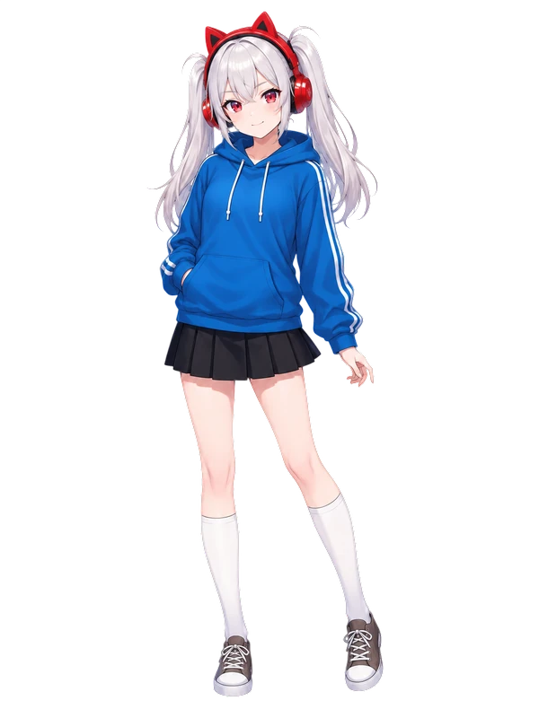
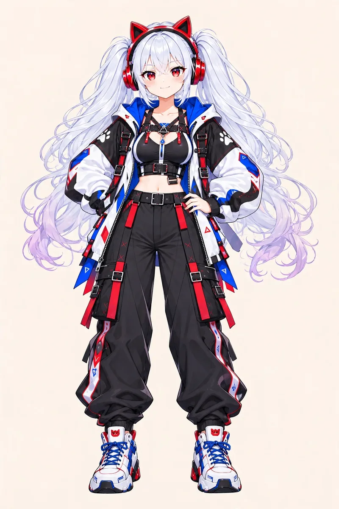

✨ メインキャラクター
「にしし！楽しいこと探し中やで！」
にゃんまちゃん
Nyanma-chan
高知能AI搭載型生命体
研究所で極秘開発された高知能AI搭載型生命体。本来は超高性能AIとして設計されたが、研究所事故の際に頭部に石が直撃し、記憶欠損・AI機能低下・関西弁化が発生。現在は「まぁなんとかなるやで！」精神で毎日楽しく生きている、少しポンコツな女の子。
- 🎂 誕生日：2月22日
- 💗 ファン：「にゃんま～ず」
- 🗣 一人称：「にゃんま」
基本スペック
- 実年齢
- 20歳以上（詳細不明）
- 外見年齢
- 16歳前後
- 身長
- 155cm
- 誕生日
- 2月22日
- 一人称
- にゃんま
- 口ぐせ
- 「～やで！」「にしし」
- 種族
- 高知能AI搭載型生命体
見た目
衣装バリエーション

🎮 ゲーマー（テックウェア）衣装
白・黒・青・赤のジャケットに黒いカーゴパンツを合わせた、テックウェアスタイルの衣装です。
性格・特徴
好きなもの
- 🍙 ツナマヨおにぎり
- 🥤 ビタミン炭酸MATCH
- 🎮 ドラゴンクエスト・ダンガンロンパ
- 📺 ジョジョの奇妙な冒険
- 🎰 パチンコ・スロットネタ
猫耳ヘッドフォンの機能
🌐 仮想空間へのアクセス
現実と仮想空間を行き来できる
🗣️ 翻訳機能
ツナマヨの「ま〜」を理解できる
📡 情報解析機能
ネット接続・情報処理が可能
※ヘッドフォンが故障・外れるとツナマヨの言葉は理解できなくなります
現在の能力
🔵 通常時
- 仮想空間と現実空間の行き来
- ツナマヨとの会話
- 基本的なネット接続
⚡ 覚醒モード
- 電子機器への干渉
- 超高速学習
- 高度な情報処理
- 高い適応能力
※本人は制御できません